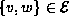
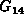
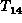
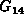
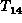
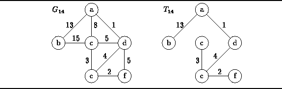

Data Structures and Algorithms
with Object-Oriented Design Patterns in C++
Data Structures and Algorithms
with Object-Oriented Design Patterns in C++The total cost of an edge-weighted undirected graph is simply the sum of the weights on all the edges in that graph. A minimum-cost spanning tree of a graph is a spanning tree of that graph that has the least total cost:
Definition (Minimal Spanning Tree) Consider an edge-weighted, undirected, connected graph, where C(v,w) represents the weight on edge . The minimum spanning tree of G is the spanning tree
that has the smallest total cost,
Figure  shows edge-weighted graph 
together with its minimum-cost spanning tree .
In general, it is possible for a graph to have several different
minimum-cost spanning trees.
However, in this case there is only one.
shows edge-weighted graph 
together with its minimum-cost spanning tree .
In general, it is possible for a graph to have several different
minimum-cost spanning trees.
However, in this case there is only one.

Figure: An Edge-Weighted, Undirected Graph and a Minimum-Cost Spanning Tree
The two sections that follow present two different algorithms for finding the minimum-cost spanning tree. Both algorithms are similar in that they build the tree one edge at a time.
 Copyright © 1997 by Bruno R. Preiss, P.Eng. All rights reserved.
Copyright © 1997 by Bruno R. Preiss, P.Eng. All rights reserved.